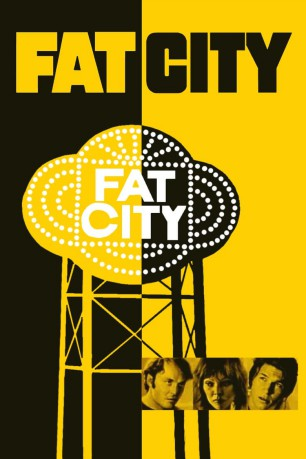

#11472 Fat City
Auszeichnungen: für 1 Oscars nominiert
 
 IMDB-Wertung: 7.4 / 10
IMDB-Wertung: 7.4 / 10  Tomatometer: 100
Tomatometer: 100  Metascore: 0
Metascore: 0 
Stockton, Kalifornien. Ein heißes Pflaster für zwei Amateurboxer, die nie den großen Fight gewinnen - weder im Ring noch im Leben: Früher hat Tully manchen Kampf für sich entschieden, doch längst ist der Erfolg in die nächste Runde gegangen. Seine Geliebte Oma hat Alkoholprobleme, und als er bei ihr einzieht, ist der Beziehungskrieg vorprogrammiert. Ernie, jung und heißblütig, will unbedingt gewinnen, geht aber gleich bei seinem ersten Kampf ko. Die beiden Männer halten sich mit Gelegenheitsjobs über Wasser, bis Tully ein fragwürdiges Comeback gelingt und Ernie eine neue Niederlage hinnehmen muss. "Fat City"steht für Geld und Erfolg - für beide unerreichbar?
Jahr: 1972
Dauer: 92 Minuten
FSK:
Land: USA Studio: Columbia PicturesTonspuren:
Untertitel:
Auflösung: SD (608x320) Größe: 699 MB
Genre: Drama, Sport
Regisseur:  John Huston
John Huston
Drehbuch: Leonard Gardner, Leonard Gardner
Soundtrack:
Darsteller:
 Stacy Keach als Tully
Stacy Keach als Tully Jeff Bridges als Ernie
Jeff Bridges als Ernie- Susan Tyrrell als Oma
 Candy Clark als Faye
Candy Clark als Faye- Nicholas Colasanto als Ruben
 Al Silvani als Referee at Tully-Lucero Fight (uncredited)
Al Silvani als Referee at Tully-Lucero Fight (uncredited)- Art Aragon als Babe
- Curtis Cokes als Earl
- Sixto Rodriguez als Lucero
- Billy Walker als Wes
- Wayne Mahan als Buford
- Ruben Navarro als Fuentes
- Álvaro López als Rosales (uncredited)
- Carl D. Parker als Paymaster (uncredited)
- Bill Riddle als Boxer (uncredited)
Datei: X:\1972\Fat City (1972, FSK, 608x320).avi seit 13.07.2019
Festplatte: HD 1971-1979
 Es gibt insgesamt 26 Filme in der Gruppe '1972'
Es gibt insgesamt 26 Filme in der Gruppe '1972'